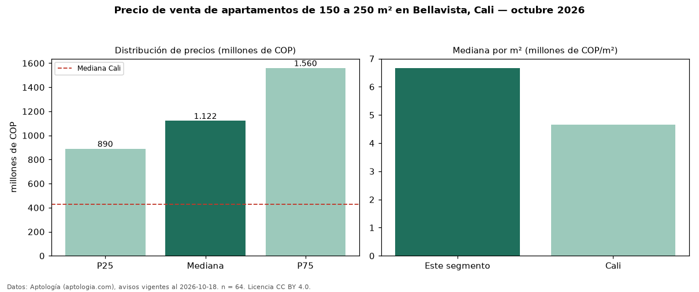

Precio de venta de apartamentos de 150 a 250 m² en Bellavista, Cali — octubre 2026
Con 64 avisos vigentes, el precio mediano de apartamentos de 150 a 250 m² en venta en Bellavista, Cali es COP 1,12 mil millones. Eso es 32 % más que la mediana de todos los apartamentos en venta de Bellavista (COP 850 millones, n = 225); este segmento reúne el 28 % de esos avisos. Por metro cuadrado, la mediana es COP 6,67 millones/m² (n = 64), 8 % por encima del conjunto de referencia (COP 6,15 millones/m²). El área mediana anunciada es 182 m². El segmento con más oferta es el de 3 o más habitaciones (62 avisos, mediana COP 1,20 mil millones). La administración mediana declarada es COP 1,41 millones al mes (n = 49). El estrato más frecuente es 6 (78 % de los avisos con estrato). La mitad central de los avisos va de COP 890 millones a COP 1,56 mil millones (razón 1,8), una dispersión moderada. Datos: Aptología (aptologia.com), CC BY 4.0 — https://www.aptologia.com/venta/cali/bellavista. Archivos: PDF, CSV con las cifras y gráfica PNG.

| Avisos únicos | 64 |
|---|---|
| Percentil 25 | COP 890.000.000 |
| Mediana | COP 1.121.617.446 |
| Percentil 75 | COP 1.560.000.000 |
| Mediana por m² | COP 6.667.599 |
Fuente: avisos vigentes de portales inmobiliarios recopilados por Aptología, deduplicados (mínimo 30 avisos únicos por celda). Precios pedidos, no cerrados. Fecha: 2026-10-18.